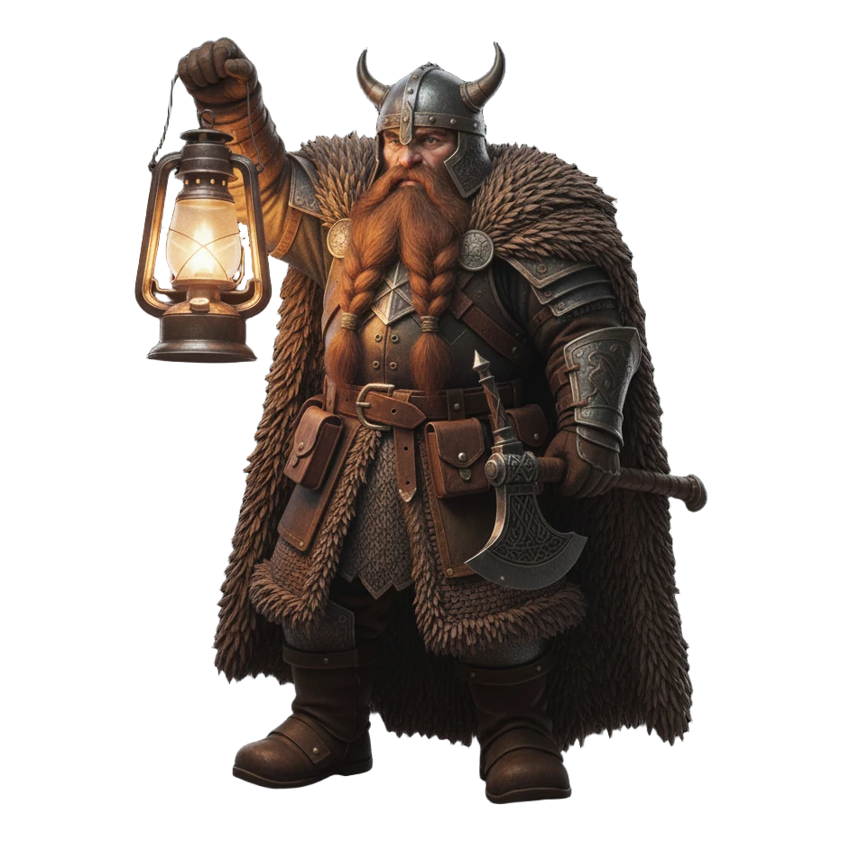
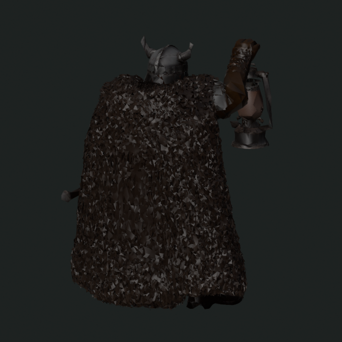
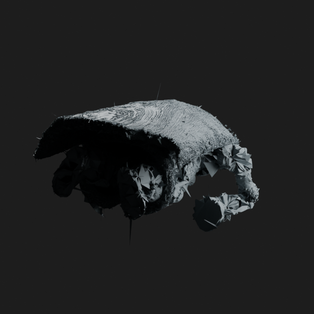

Official source
Clean overlapping directional fur tufts around a coherent dwarf figure.
Same source image and seed 80301. This is an unmatched qualitative row: MLX and MPS use separate materials, lighting, framing, and reconstruction routes. MLX target-face pressure does not repair the flake failure. The MPS-requested run shows materially more coherent directional organization on the cloak exterior, but remains partial: it misses the 500k-face target and does not recover clean source-like tufts or a coherent attached figure.

Clean overlapping directional fur tufts around a coherent dwarf figure.

149,311 final faces. The cloak volume survives, but fur becomes disconnected irregular triangular flakes.
153,251 final faces. No material visual improvement; cleanup collapses the higher request to nearly the same output.

27,134,294 final faces; CPU fallback was permitted. Directional exterior organization is visibly stronger, but it reads as striated fleece rather than clean tufts; figure and underside remain malformed.